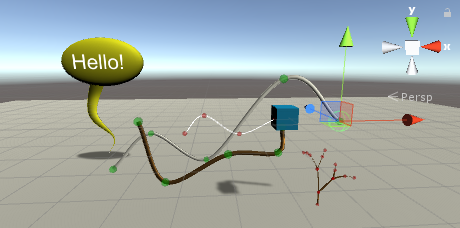

Easy rendering and editing of curved lines in Unity
Requires Unity 2017.1 or higher.
This is a project born from the Easy Curved Line Renderer utility originally created by AcrylicCode and posted on the Work In Progress forum of Unity, then modified by GPV.
AcrylicCode discovered how to easily smooth out any set of positions, thus easing the creation of some simple Curved Line Renderers.
GPV adapted the original project to the newer versions of Unity, making some changes and exploiting the line texturing feature added since Unity 2017.1.
Also useful for rendering solid lines (e.g. wires, pipes, speech bubble tails...)

Features
Included:
- scripts:
- LineSmoother
- main utility script for smoothing out positions
- static function so it can be accessed without being attached to a gameobject
- feed it an array of Vector3 and a segment size and you will get back a smoothed out array!
- segment size is world space and so the number of line segments in between points adjusts based on distance between points
- CurvedLineRenderer
- example use case for smoothed out positions
- add new points and it will automatically update to include the new position!
- example scene is provided with a regular curved line and a curved line with physics applied to each point
- CurvedLinePoint
- draws gizmo and sends back to CurvedLineRenderer to update line when the point is moved
- LineSmoother
textures and materials:
- normal maps to make curved lines look like their were solid
- sample ready-to-use materials for lines (unlit and wires or pipes)
Curved lines and their gizmosDocumentation
An example scene is provided to demonstrate different usages of the included assets.
To see how Easy Curved Line Renderer work, see EasyCurvedLine example scene in Assets/EasyCurvedLine/Examples.
Context menus are added to Unity Editor to ease the creation of curved lines.
- In Game Object menu (and in the Hierarchy view context menu) a new
Curved linemenu item is present inEffectssub-menu. - In Curved Line Renderer component there is a menu item for adding new line control points.
- In Curved Line Point component there are menu items for adding new line control points.
Acknowledgements:
The first implementation comes from the Easy Curved Line Renderer post on Unity forum. Some new features were inspired by people who suggested or asked for them, and all the people who shared their ideas on that post. Thanks in advance to all the people who contributed and will contribute in any way to this project.
Contributing
Contributions from you are welcome!
If you find bugs or you have any new idea for improvements and new features you can create an issue on GitHub (please follow the suggested template, filling the proper sections). To open issues or make pull requests please follow the instructions in https://github.com/gpvigano/EasyCurvedLine/blob/master/CONTRIBUTING.md "CONTRIBUTING.md".
License
Released under the MIT License.
To try this project with Unity go to the repository page on GitHub press the button Clone or download and choose Download ZIP. Save and unzip the archive to your hard disk and then you can open it with Unity. You will also find a Unity package in Release section, even if it could be not up to date with the current changes.